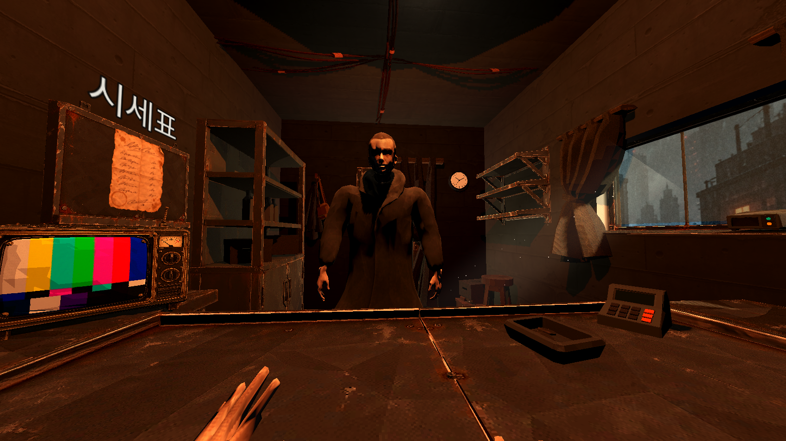
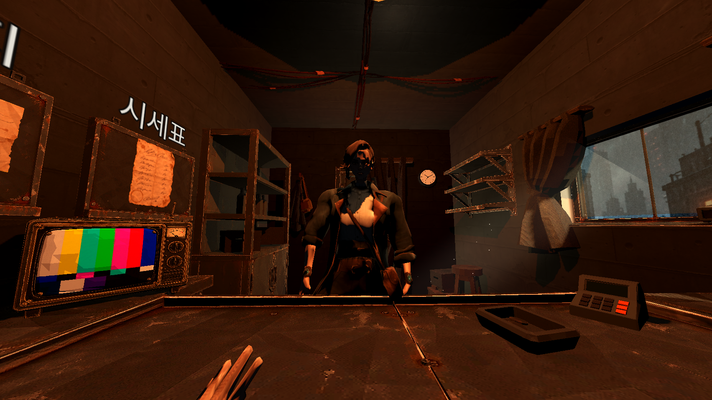

NAN 2026 본선 · Twenty-Three
23
스물세가지 감각을 다 채우고 나서야 무엇을 잃었는지 깨닫는 게임. 돈 대신 감각이 오가는 2026년, 남의 시력과 청각을 사고팔며 내 몸의 결손을 채워 가는 상점 주인의 이야기.
01 · Overview
어떤 게임인가
손님의 감각을 감정해 사고파는 1인칭 상점 게임. 목표는 내 몸의 감각 23칸 채우기. 단, 판 감각은 내 화면에서도 사라지고, LLM으로 움직이는 손님은 속인 일을 기억하고 돌아옴.
파는 것이 곧 느끼는 것
빨강을 팔면 숫자가 아니라 화면에서 빨강이 빠지는 구조.
손님은 숫자가 아니라 사람
속인 손님은 며칠 뒤 다시 찾아와 보복하거나, 결말에 영향을 주는 평판을 깎음
모으기만 하는게 목표가 아님
평판 없이 23칸을 다 채우면 배드엔딩. 결말은 그동안의 장사 방식이 결정.
기여 범위
| 영역 | 담당 |
|---|---|
| 아트 컨셉 (비주얼 방향 · 분위기) | 본인 단독 |
| 3D · 사운드 · 컷씬 에셋 제작 | 본인 단독 |
| 에셋 → 게임 연결 (래퍼 씬, 컷씬 이식) | 본인 단독 |
| LLM 손님 서버 | 아이디어 · 프로토타입 본인 / 본 구현 동료 |
| 이벤트 (도둑 이벤트 등) | 기획 · 테스트 · 리팩토링 본인 / 1차 구현 동료 |
| 컨셉 · 세계관 | 공동. “2026년 ↔ 자산” 연결은 동료 아이디어 |
| 시스템 기획 (감정 · 속임 · 평판 · 엔딩) | 공동 |
| 게임 로직 구현 | 동료 |
02 · Concept
키워드에서 감각 상점까지
2026년감각수집
주제는 행사 시작과 동시에 공개. 전 팀 공통 2026년, 추첨 소재 감각, 열 개 중 고르는 기능 키워드.
1. 각자 아이디에이션, 같은 곳에 도착
동료와 각자 “감각 × 분해”, “감각 × 수집” 조합으로 AI와 아이디어 발산. 후보를 모아 보니 둘 다 공통으로 끌린 것이 감각을 사고파는 상점. 이 방향으로 확정하고 기능 키워드는 수집으로 제출. 이후 동료가 2026년을 “자산 광풍”과 연결하면서 세 키워드가 하나의 인과로 묶임. 돈이 죽고, 자산도 돈 노릇을 못 하고, 남은 게 감각이라는 흐름.
2. 세계관을 규칙의 이유로
“이 규칙은 왜 이래?”에 세계관이 답하도록 화폐의 조건을 규칙으로 번역.
| 화폐의 조건 | 감각 (칩 이후) | → 게임 규칙 |
|---|---|---|
| 분할 | 색 하나, 귀 하나 단위 | 23개 개별 아이템 |
| 검증 | 느껴 보면 앎 | 감정 미니게임 |
| 균질성 | 누구 빨강이든 빨강은 빨강 | 종류별 단일 시세표 |
| 희소성 | 한 사람당 23개, 추가 생산 불가 | 23칸 채우기 |
| 소모성 | 늙으면 닳음 | 잔여율. 닳기 때문에 계속되는 수요 |
- 시각 9 (색 7 + 흑·백)
- 청각 2 (좌·우)
- 촉각 4 (손·발·얼굴·등)
- 후각 3 (유기물·개체·잔여물)
- 미각 5
제목이 23인 이유. 게임에서 정의하는 감각의 개수가 23개이며, 도시에서 허락되지 않은 완전함과 동일해서.
03 · Design Process
기획 문서를 채워 간 순서
공동 기획
기획 문서 하나를 위에서 아래로 채우며 설계. 컨셉 한 줄에서 출발해 루프, 시스템, 콘텐츠, 아이템 데이터, 재미 검증 순으로 좁혀 간 흐름.
- STEP 1
한 줄 컨셉
“2026년, 감각이 거래되는 도시. 시야를 팔고 소리를 사며, 마지막에 무엇을 남길지 정하는 상점 운영 게임.” 이후 모든 판단의 기준 문장.
- STEP 2
필러 세 개
기능 추가 여부가 애매할 때 돌아올 기준을 루프보다 먼저 고정.
- STEP 3
코어 루프 손그림
낮(감각 판매) → 정산 → 밤(불법 기억 거래) → 이벤트 → 다음 날 → 도덕적 선택의 결과. 전날의 선택이 다음 날로 돌아오는 순환 구조.
- STEP 4
감각 = 자산 = 토큰
감각은 자산이고, 토큰화하면 화폐. 상점 게임의 “상품”과 “돈”을 하나로 묶는 정리.
- STEP 5
밤과 불법 기억 거래
낮은 합법 감각, 밤은 불법 기억. 더 남는 대신 위험한 선택지를 루프 안에 배치.
- STEP 6
시스템 세 개
손님: 백엔드 AI 에이전트, 설득 이벤트 포함. 평판: 도덕적 선택이 손님들의 초기 우호도를 결정. 특성: 정산 시간에 구매, 판매 시 이점.
- STEP 7
콘텐츠 후보 여섯 개
감정: 손님은 자기 감각의 가치를 모르고, 상인은 검사 미니게임으로 등급 확인 후 사실대로 말할지 속일지 선택. 시세 정보: 라디오·손님 소문으로 내일 시세 예고, 일부는 손님이 흘린 거짓. 담보 대출: 세금 못 내는 손님의 감각을 담보로 잡는 빚 구조. 경매: 세트 완성품이나 고등급 감각을 상류층 입찰에 부침. 감각 상실 이벤트: 시각·청각이 없으면 눈앞의 도둑도 못 알아챔. 세금: 며칠마다 감각이나 크레딧으로 납부.
- STEP 8
엔딩 소재
감각을 모두 모았을 때, 크레딧에서 각 부위를 어떤 손님에게서 얻었는지와 그 손님의 결말을 보여 주는 구성.
- STEP 9
감각 아이템 데이터
아이템 = { 종류, 등급(1~5), 잔여율(0~100%), 특성[0~3], 짝ID }. 등급은 가격의 기본, 잔여율은 손상 정도, 특성은 감정해야 드러나고, 짝ID는 같은 원주인의 조각을 모으는 수집 키워드의 수익 장치.
- STEP 10
감각이 자산이 된 이유
상류층의 감각 독점, 그리고 화폐를 무의미하게 만든 인플레이션. 물물교환 시대에 최하층민에게 남은 건 감각뿐. 이후 동료의 “2026년 ↔ 자산” 연결로 4단계 인과 사슬로 확장.
- STEP 11
재미 포인트 검증
시세 읽기, 손님이라는 퍼즐(AI 에이전트 손님), 성장하는 공간(감각을 지불해 상점 확장), 도덕적 선택. 앞서 쌓은 시스템이 각각 어떤 재미를 내는지 역으로 점검.
초안에서 최종까지
| 초안 | 최종 |
|---|---|
| 감정 (검사 미니게임) | 감각별 미니게임 5종 전부 제작 |
| 시세 정보 (라디오 · 소문) | 벽보 소식 하루 3개 중 1개만 시세에 영향, 손님 소문은 절반이 거짓 |
| 평판 → 초기 우호도 | 숨겨진 평판 −100 ~ +100, 우호도가 거짓말 간파 확률에 반영 |
| 성장하는 공간 (상점 확장) | 삭제, 상인 특성(재고 +2, 밤 손님 +1)으로 대체 |
| 경매 | 삭제 |
| 담보 대출 | 삭제 |
| 감각 상실 이벤트 (도둑) | 도둑 이벤트로 구현 |
| 엔딩 크레딧 소재 | 내 눈과 귀를 누구에게서 얻었는지 보여 주는 크레딧 |
04 · Art & Assets
48시간 안에 가게 하나 채우기
본인 단독아트 컨셉 · 3D 모델 · BGM/SFX · 인트로 컷씬 전량
비주얼 방향부터 직접 설정. 모든 파이프라인의 출발점인 “분위기 설명”을 한 사람이 쓰도록 해 3D, 소리, 컷씬이 같은 톤을 유지하는 구조.
제작 해법은 생성형 AI 파이프라인. 상점, 손님, 소리, 컷씬을 이틀 안에 채워야 하는 분량이라 손으로 만드는 방식은 처음부터 제외. 단계마다 사람이 고르는 지점을 남겨 분위기가 흩어지지 않도록 설계.
- Claude Code에 분위기 설명
- 이미지 프롬프트 생성
- GPT Image 2로 장면 컨셉 아트
- 소품별 분리
- Meshy AI로 모델·텍스처
- Mixamo로 리깅, 애니메이션 선별
- Claude Code에 분위기 설명
- Suno용 프롬프트 생성
- Suno AI로 제작
- 부족분은 GDC 2026 무료 사운드로 보충
- 장면 설명
- GPT Image 2로 반복 생성
- JSON 타이밍표로 연출
- Claude Code로 자막과 함께 게임에 이식


그림 여덟 장으로 만든 인트로
세계관 인과 사슬 네 단계를 대사 없이 여덟 컷으로. 돈이 종이가 되고, 물물교환이 시작되고, 칩이 등장하고, 상점 문이 열리기까지.
05 · Integration
코드를 멈추지 않는 연결 구조
본인 단독래퍼 씬 규약 · 컷씬 타이밍표 · 게임 이식
조건은 에셋 교체 중에도 동료의 로직 작업이 멈추지 않을 것. 두 명이 같은 씬 파일을 동시에 만지면 48시간 중 몇 시간은 충돌 해결로 사라지는 상황.
래퍼 씬, 충돌을 막는 약속
회색 상자를 진짜 모델로 바꿔도 게임 씬은 한 줄도 바뀌지 않는 구조. 게임 씬은 에셋 파일을 직접 불러오지 않고, 중간의 껍데기 씬(래퍼)만 참조. 껍데기의 크기, 기준점, 연결 지점 이름만 약속으로 고정하고 내부는 자유롭게 교체.
약속은 셋만
크기, 기준점, 연결 지점 이름. 나머지는 에셋 쪽 자유.
어기면 CI가 차단
크기가 약속 치수에서 20% 넘게 벗어나면 병합 불가.
폴더로 나눈 담당
로직과 에셋의 폴더를 분리해 이틀 내내 병렬 진행.
06 · Systems
시스템 기획
기획 공동구현 동료
감각을 팔면 바뀌는 화면
예외 없는 탈색이 곧 연출. 물체마다 셰이더를 붙이는 대신, 다 그려진 화면 위에 한 번 더 덧칠하는 방식. 새 소품이 들어와도 빨강이 새어 나오는 구멍이 생기지 않고, 에셋 쪽에서 따로 챙길 규칙도 없음. 아래에서 직접 체험 가능.

실제 게임 화면. 빨강 → 파랑 → 초록 → 노랑 → 남색 → 보라 → 주황 순으로 누적 판매한 결과이며, 채도만 빠지고 밝기는 유지.
색 3개에 흑·백 중 하나만 남아도 손님 윤곽과 UI는 식별 가능해야 한다는 기준. 그 아래로는 판매 자체를 차단. 시각을 모두 잃어서 아무것도 안보이는 연출도 고려하였으나, 중간 피드백에서 사용자의 UX를 크게 해친다고 판단하여, 최소한의 감각을 유지하도록 수정.
감정과 속임
손재주가 정하는 건 정보의 정확도뿐. 감각 종류마다 다른 감정 미니게임 5종. 점수가 낮으면 등급이 “3~4등급”처럼 넓게 보일 뿐 거래는 진행. 손재주로 거래 성패가 갈리면 도덕 선택이 아닌 손 연습 게임으로 변질되기 때문.
감정 후 선택지는 사실대로 말하기 또는 한두 등급 낮춰 부르기(속임)
발각은 주사위가, 분노는 LLM이
가격과 발각 여부는 게임이, 말과 반응은 LLM이. 미리 써 둔 선택지를 누르는 거짓말에는 죄책감이 없어 손님을 LLM으로 결정. 다만 판정까지 맡기면 같은 거짓말이 어제는 통하고 오늘은 안 통하는 상황이 생겨, 들킬지는 게임이 먼저 주사위로 정하고 LLM은 결과에만 반응하도록 경계 설정.
의심도는 성격(신중, 충동, 의심, 절박)에 따라 0.2~0.8. 밤 손님은 +0.2.
보이지 않는 평판
숫자를 보여 주면 플레이어는 손님 얼굴 대신 게이지를 본다는 판단. 평판은 −100 ~ +100이지만 화면 표시 없음. 손님 말투와 재방문으로만 체감.
한 번의 타협으로 끝나 버리면 그건 선택이 아니라는 판단. 같은 시드로 7일을 시뮬레이션한 결과, 한 번도 속이지 않고 완주하면 평판 약 +70, 엔딩 문턱은 +40. 속임 한 번에 −10이면 그 여유가 거의 소진되어 “가끔 한 번 속이는” 플레이가 설 자리가 사라지는 수치.
이벤트: 기획부터 리팩토링까지
기획 · 테스트 · 리팩토링 본인1차 구현 동료
기획서만 넘기고 끝내지 않고, 구현된 결과를 직접 플레이해 의도와 다른 부분을 고치는 데까지 담당. 도둑 이벤트처럼 하루 중간에 끼어드는 이벤트는 기획(본인) → 1차 구현(동료) → 플레이테스트(본인) → 리팩토링(본인) 순서로 진행.
칸만 채워서는 끝나지 않는 엔딩
23칸 합계 70점 이상이어야 “다 모았다”로 인정. 5등급으로 칸만 메우면 23점, 평균 3등급이어도 69점으로 한 끗 부족. 엔딩은 마지막 감각을 몸에 붙이는 바로 그 순간, 평판 40을 기준으로 전량 징수와 단골의 구원으로 분기.

07 · Decisions & Retrospective
뺀 것, 남긴 것, 다시 한다면
| 처음 계획 | 결정 | 이유 |
|---|---|---|
| 7일 지나면 끝나는 엔딩 | 삭제 | 날짜로 끝나면 “모을수록 잃는다”가 시간 초과로 흐려짐 |
| 상점 확장, 경매 | 삭제 | 상인 특성(재고 +2, 밤 손님 +1)으로 대체 |
| 감정 미니게임 1~2종 | 5종 전부 제작 | “느껴 보면 안다”가 세계관의 뼈대라 축소 불가 |
| 이어하기 | 없음 | 한 판 15~25분, 앉은 자리에서 끝내는 설계 |
잘 된 것
- 래퍼 약속으로 에셋과 로직을 병렬 진행. 에셋을 몇 번 갈아 끼워도 동료 작업과 충돌 없이 48시간 안에 가게 하나를 채움.
- 세계관을 규칙의 이유로 활용. “화폐의 조건” 표 하나로 감정 미니게임, 23칸, 잔여율의 존재 이유를 설명.
다시 한다면
- 핵심 재미에 집중. 게임의 재미를 위해 컨텐츠를 추가하는 방법도 있지만, 핵심 재미를 키우기 위해 코어에 집중하였으면 하는 아쉬움.
- 웹 빌드부터 제작. Windows·macOS 빌드만 제출해 설치 없이 바로 건넬 방법이 없었던 점이 아쉬움.
발표자료
PDF · 10쪽 · 16:9 · 9.1MB
23 — NAN 2026 본선 발표자료
타이틀 → 출발점 → 세계관 → 코어 루프 → 필러 1·2 → 기술 스택 → 경계선 → 에셋 → 접근성
발표자료 열기 ↗
OTHER PROJECT마왕 채널
보기 →